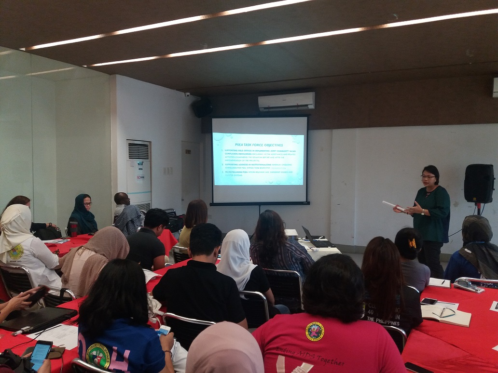
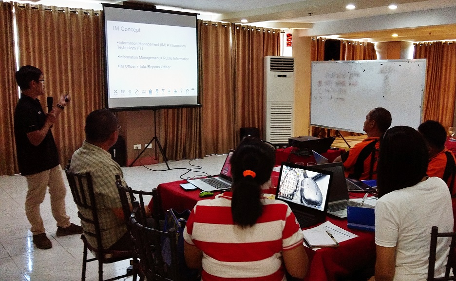

Forging a path to recovery in Marawi
Early recovery support is ramping up in Marawi City, where more than 208,000 people have returned homes as of 30 May, according to Task Force Bangon Marawi. In the newly established transitional shelters and camps of Sagonsongan, and Sarimanok 1 and 2, meeting the needs of the new residents will require a coordinated effort from Government, which both humanitarian and development partners need tosupport. Among the various sectoral challenges, food, water and sanitation facilities are among the most prominent.
The Sagonsongan transitional shelter, where the current 3,700 residents are mostly from the 24 most affected barangays in Marawi, does not have an onsite water source, and water is trucked in daily. The site also needs an efficient drainage system, preventing septic sewage with no filtration from flowing directly into nearby bodies of water which are sources of potable water to Marawi and its nearby municipalities such as Saguiaran, Marantao, and Piagapo in Lanao del Sur, and Pantar, Balo-i, and Iligan City in Lanao del Norte. The Mindanao Humanitarian Team through the WASH cluster is assisting local authorities by providing technical support. A study on the Marawi City water supply system was turned over to local authorities on 28 May by Metro Pacific Water, in coordination with private sector organization Philippine Disaster Resilience Foundation (PDRF) and Task Force Bangon Marawi. The study discusses short-term to long-term solutions to address water supply needs in Marawi City. Among the commitments made from the private sector partnership of PDRF was the construction of 12 water tanks, in an effort to augment the water needs of those staying in transitional shelters and evacuation camps.

Credit: OCHA/G. Maramag Marawi City, Lanao del Sur (17 April 2018) - Residents of the Sarimanok transitional shelter assemble to receive relief assistance from local authorities.
Marawi City housing, land and property rights
During this time of transition, addressing beneficiary selection and property issues are critical for both the residents of the transitional shelters and those who will be selected to occupy permanent housing to be constructed by the government. The United Nations Human Settlement Programme (UN-Habitat) together with the United Nations High Commissioner for Refugees (UNHCR) are supporting local authorities to identify parameters for beneficiary selection for government programmes, and in addressing housing, land and property (HLP) issues. UN-Habitat will support the permanent housing programme of the Marawi government, building 1,500 shelters in Marawi City, in partnership with the Social Housing Finance Corporation (SHFC), and the Government of Japan.
While housing programmes are underway, there are a number of hurdles to tackle. Some government projects are reportedly stalled because of land rights issues, and shelters in transition sites in Marawi City are not fully occupied due to challenges in verifying beneficiaries. In a focus group discussion conducted by the Al-Mujadilah Development Foundation in partnership with Oxfam and UnYPhil-Women, some IDP respondents who owned property in Marawi do not have access to their land titles and permits, and feared not being able to reclaim their home or business. Legal documents, along with identification cards, birth certificates and driver’s licenses were left behind while fleeing for safety, were lost or burned during the firefight. Some IDPs also expressed the need for reparation for their lost property, hoping that they will be given assistance in rebuilding their home. Those who were renters expressed fear that they will not have access to any housing assistance should they return.
Supporting the needs of remaining displaced
As of 30 May, over 214,000 displaced persons are waiting to return to Marawi, with over 97 per cent staying with host communities in neighboring municipalities. Humanitarian assistance needs to continue for those who remain displaced in both host communities and evacuation centres, and will be a challenge to sustain in coordination with recovery efforts. According to the Protection Cluster’s April Mindanao displacement report, IDPs continue to raise the need for food and water supply as their priority concern. A statement by the International Committee of the Red Cross (ICRC) stresses that “with response shifting from emergency phase towards early recovery, food donations have dwindled and livelihood opportunities are reaching only a few. A majority of displaced families still depend on relatives or friends for support, while those in evacuation sites continue to struggle with poor living conditions in makeshift camps, increasing their risk of illness.”
Children are among the most vulnerable during protracted displacement, with young children becoming malnourished and school-age children being unable to return to school, according to UNICEF. Almost half of the children in Lanao del Sur were malnourished even before the Marawi crisis, and the continuing displacement has reduced the quality and quantity of food for children, putting them at a greater risk of malnutrition. There is also concern that close to 100,000 Marawi children may have missed a year of schooling due to the continued displacement and transition. Youth who are unable to return to school are particularly at risk for recruitment into extremist groups. There is a need to support education and nutrition programmes for children to ensure that they fully recover from the emergency. UNICEF together with local partners continues to screen children in evacuation centres for malnutrition, provide support for access to WASH and safe spaces. The World Food Programme (WFP) continues to support local authorities with its school feeding activities in addition to rice distribution.
Credit: OCHA/G. Maramag Marawi City, Lanao del Sur (17 April 2018) - Sobaira, a single mother of three who returned to Marawi City in December, was given an area to farm vegetables for herself and her three children. The programme is a food security initiative between Task Force Bangon Marawi, the Food and Agriculture Organization of the United Nations (FAO) and the World Food Programme (WFP)
The intersection of meeting humanitarian and development needs
Humanitarian and development arms of donor countries continue to support Marawi response. The Swedish International Development Cooperation (SIDA) in partnership with Community Family Services International (CFSI) is supporting a cash assistance programme for displaced communities around Lake Lanao. The Australian government is supporting livelihood, protection and psychosocial programmes for recovery, as well an agriculture programme of the Food and Agriculture Organization of the United Nations (FAO) and CFSI for municipalities around the lake - Ditsaan Ramain, Marantao and Piagapo. USAID announced in May its additional support of relief efforts in Marawi, contributing an additional $3.5 million and bringing their total assistance to $8.5 million. The Japanese government is supporting the reconstruction and rehabilitation of Marawi City, signing an agreement with the Government of the Philippines on 15 May.
While recovery support is underway, the upcoming rainy season is a concern for those living in either in evacuation centres or transitional shelters. Heavy rainfall in April causing substantial damage to tents in Sarimanok, requiring the transfer of the affected IDPs to the Marawi City Hall. During a UNHCR-led protection forum in May, protection cluster members identified areas for intervention and also agreed to conduct camp coordination and camp management training for camp managers and IDP leaders who have been assigned as camp managers.
Government recovery efforts
Task Force Bangon Marawi (TFBM), in collaboration with municipal and national authorities is leading recovery efforts while balancing the coordination of meeting humanitarian needs. The National Economic Development Authority (NEDA), lead agency under TFBM’s rehabilitation section, is preparing to release a comprehensive rehabilitation and recovery plan. According to local reports, TFBM head Eduardo Del Rosario said that cost to rehabilitate the most affected areas of Marawi and areas outside the battle area could reach up to PhP80 billion (US$1.5 billion). In a press statement issued on 26 May, TFBM authorities said that the bidding process for developers is ongoing and their selection committee is finalizing agreements to be circulated to the public. An inter-agency coordination council in Marawi City, composed of humanitarian actors and Marawi local government met on 30 May to discuss continuous support for IDPs and returnees. The Mindanao Humanitarian Team (MHT) is meeting monthly with Task Force Bangon Marawi leadership to provide technical support and a coordinated humanitarian response.
Credit: CFSI Marawi City, Lanao del Sur (17 April 2018) - Government programmes are strengthening its livelihood initiatives for IDPs, with Community and Family Services International(CFSI), Food and Agriculture Organization of the United Nations (FAO) and the Australian government supporting of partners such as the Department of Agriculture and Fisheries of the Autonomous Region of Muslim Mindanao, Department of Agriculture, Department of Agrarian Reform, and Mindanao Development Authority. In photo are José Luis Fernandez FAO (left), the Australian Embassy’s Deputy Head of Mission, Mat Kimberley (centre),and Steven Muncy of CFSI (right).
IDPs who own property in Marawi and do not have access to their land titles feared not being able to reclaim their home or business.
While recovery support in underway, the upcoming rainy season is a concern for those living in either in evacuation centres or transitional shelters. Heavy rainfall as early as April causing substantial damage to tents in Sarimanok.
Gender in Marawi humanitarian action
The needs and priorities of women, girls,men and boys and the LGBT community are critical during an emergency response, and gender equality is crucial to humanitarian action. In July 2017, the Philippine Commission on Women and the Commission on Human Rights issued guidelines to address gender-related concerns and needs in the recovery, reconstruction, and rehabilitation of Marawi and other affected localities. The memorandum is meant to guide government agencies such as Task Force Bangon Marawi, the Housing and Urban Development Coordinating Council (HUDCC), and concerned local authorities on the use of their gender and development budget. Republic Act 9710 or the Magna Carta of Women, requires government agencies to allot at least five per cent of its budget for gender and development programmes. While comprehensive gender data of those displaced by the Marawi conflict is difficult to verify, in an estimate by OCHA in July 2017 based on the Government censusdata, approximately 51 per cent displaced persons are female while 49 per cent are male. Of this population, 49 per cent are children. In the absence of current sex-disaggregated data, humanitarian actors have been utilizing qualitative methods to gather information. UN Women conducted a listening exercise in September 2017 as part of its transitional justice project of women affected by the Marawi conflict. The key gender issues gathered highlighted gender discrimination, the need for women to access employment opportunities and to be included in consultations regarding their displacement, as well as their experiences of sexual harassment. The exercise revealed that finding income generating opportunities to restore their livelihoods was a key priority for Marawi women. In October 2017, the child protection and gender-based violence (GBV) working group of the Humanitarian Country Team, composed of UN agencies and international non-governmental organizations, conducted an assessment report on Marawi. Key findings of the report include the decline of the psychological well-being of children and their caregivers, as well as an increased risk of gender based violence including sexual abuse, exploitation and early/forced marriages.
A gender snapshot released in May by Oxfam in partnership with the Al-Mujadilah Development Foundation (AMDF) and the UnYPhil-Women looks further into the gender context of the Marawi conflict. The report states that in a survey conducted by the Al Mujadilah Development Foundation, Inc. (AMDF) and Mindanao State University’s Department of Community Development,183 displaced people confirmed incidents of violence against women and girls in evacuation centres or host communities in Saguairan. Other findings include concerns by women respondents to have their children’s birth certificates and school documents in order for them to be enrolled in schools, while men were concerned about assistance with legal documents such as land titles and their family's passports that were burned during the conflict. The provision of Disaster Assistance Family Access Card (DAFAC) also raises issues for women, as usually it is the names of the male head of the household that is written which makes them the main source to access identification cards and other benefits from barangay leaders more often than women. The concerns of elderly IDPs were also noted, with respondents saying the elderly women have difficulty sleeping on the floors in evacuation centres and accessing toilets in camp sites due to their distance from their tents. The report recommends the gender profiling of IDPs, including the gathering of age and sex-disaggregated data to allow humanitarian actors to track conditions and respond to specific needs.

Humanitarian response related to gender issues
Local authorities continue to work together with humanitarian actors to assist vulnerable communities. The United Nations Population Fund (UNFPA) is assisting local and government partners in Marawi, creating women and child friendly spaces in partnership with the Department of Social Welfare and Development, which offer protection and care to those at risk of gender-based violence. They also introduced the referral pathway for child protection and gender-based violence cases, together with the Joint Regional Child Protection- Gender-based Violence Working Group for the Marawi Armed Conflict Humanitarian Response. Cluster partners are supporting the government’s referral mechanism to address grave child rights violation, genderbased violence, as well as initiatives for psychosocial support services. Humanitarian actors responding in Marawi are also receiving training in gender equality programming, facilitated by OCHA. The Humanitarian Country Team has issued a Marawi response document which outlines gender-specific protection concerns as well as outlining a framework for coordinated response to the Marawi Crisis. The United Nations Central Emergency Response Fund has allocated a grant to support humanitarian activities related the protection of Marawi IDPs, including interventions for children, pregnant and lactating women, and ensuring access to reproductive health services.
Finding income generating opportunities to restore their livelihoods was a key priority for Marawi women.
Cluster partners are supporting the government’s referral mechanism to address grave child rights violation, genderbased violence, as well as initiatives for psychosocial support services.
After Mayon Volcano response, Albay continues preparedness efforts for future emergencies
More than two months after Mayon Volcano’s alert level was lowered and it was announced safe for the remaining displaced families to return home, Albay local authorities are drawing on the experience to further enhance disaster preparedness in the province. During the eruption, which at its peak displaced over 84,000 people from Albay municipalities, OCHA provided information management support to the Albay Public Safety and Emergency Management Office (APSEMO). The assistance included gathering data from municipal governments and supporting a coordinated rapid damage assessment.
Credit: OCHA/L. Aporto Legazpi City, Albay (21 May 2018) - OCHA information management officer Joseph Addawe conducts a training of Albay municipal officers working in disaster risk reduction management and information technology.
From 21-25 May, in collaboration with APSEMO and with funding support from UNICEF, OCHA was back in Legazpi to help train 40 disaster risk reduction management officers and information technology staff coming from the 15 municipalities and three component cities in the province. The five-day information management training focussed on the international and national humanitarian response cluster system, rapid damage assessment and needs analysis, improving local data management, enhancing Albay’s provincial reporting, and community engagement in preparedness.
Head of APSEMO Cedric Daep said, “Albay’s success in working with international partners is related to our understanding of the international humanitarian system. We also understand that for both international organizations and local government to effectively provide support, it needs reliable and useful data.”
Disaster assessment tools at the local level
Since Typhoon Durian in 2006, APSEMO has been working together with 18 municipal governments in Albay to consolidate assessment reports and improve the quality of information ready to be shared during emergency. For municipal disaster risk reduction and management offices, the importance of using a standard reporting template as well as assisting local authorities in consolidating data and making information more accessible are crucial to the establishment of an effective operational information management system. “We want to improve our database to ensure a more unified way of reporting critical information before, during and after an emergency. We want to work more effectively and improve data flow from the provinces,” Eugene Escobar, APSEMO training department lead, said.
Mayon Volcano is currently at alert level-2, a moderate level of unrest. Both APSEMO and the Philippine Institute of Volcanology and Seismology (PHIVOLCS) continues to warn residents to stay out of the 6-kilometre danger zone due to a possible sudden explosion, lava collapses, pyroclastic flows and ash fall that can occur and threaten areas in the upper to middle slopes of the volcano.
Local government engaging the affected population
In a field visit conducted by OCHA and APSEMO to the 6 km danger zone areas near Legazpi City and the municipality of Daraga, at-risk communities provide a context on how information and communication protocols at the local level worked. The Albay municipal officers expressed that at the core of data, there is the need to address the lifesaving needs of the community.
“For us, as long as the municipal and the barangay level gives us information on when is the best time to evacuate and where to go, it becomes automatic for our family and neighbours to prepare at least the most valuable stuff such as food, water and cash ready for mass evacuation. It’s automatic, since we trust whatever form of information coming from them and when the time comes that we would air our concerns, they also listen. I think, it’s important to maintain that.”, says Marites Adra, 46, at Barangay Mabinit, Legazpi City
APSEMO is planning to pilot a pre-crisis information mapping and consultation on humanitarian needs in selected at-risk barangays surrounding the Mayon Volcano. Having a baseline of the key immediate needs of a vulnerable community will help in the conduct of future assessment.
Pre-crisis mapping was first used in the National Capital Region to support the Humanitarian Country Team’s Manila contingency plans in case of a magnitude-7.2 earthquake.

We want to improve our database to ensure a more unified way of reporting critical information before, during and after an emergency.” - Eugene Escobar, APSEMO training department lead
Shared Aid Fund for Emergency Response Launched
Three national NGO networks in the Philippines – the Caucus of Development NGOs (CODENGO), the Humanitarian Response Consortium (HRC), and the National Secretariat for Social Action/Caritas (NASSA/Caritas) came together in mid-May to launch the Shared Aid Fund for Emergency Response - SAFER, the first locally-led fundraising mechanism in the country specifically designed to support disaster relief activities of local community-based organisations and NGOs.

Credit: SAFER Quezon City, Metro Manila (15 May 2018) - A panel discussion at the launch of the Shared Aid Fund of Emergency Response.
When disaster strikes, neighbours and communities will come together to help each other, sharing what they have and lending a hand to get life back to normal. This bayanihan spirit of mutual assistance and solidarity is very much in evidence in the Philippines, where across all sectors of society the aftermath of a disaster is typically met with generosity and compassion.
The humanitarian response to Typhoon Haiyan in 2013 saw a massive outpouring of assistance, much of which came from Filipinos themselves. According to the IASC Inter-Agency Humanitarian Evaluation [see: https://interagencystandingcommittee.org/ evaluations/content/haiyan-typhoon-philippines-iahe] of the Typhoon Haiyan Response, remittances from Filipinos living and working abroad played an important role for many affected communities, with an estimated US $600 million contributed in the first three months following the typhoon.
The humanitarian response to the crisis that enveloped Marawi City a year ago displayed again this generosity of spirit, with local NGOs, faith-based organisations, and the private sector coming together to provide critically needed assistance for those displaced by the fighting.
According to Fr. Edwin Gariguez, executive secretary of NASSA/Caritas and SAFER’s chairperson, the goal of the fund is to tap into this bayanihan spirit by bringing together the largest national NGO networks in the Philippines to raise funds for the isolated and most vulnerable communities that are affected during emergency situations. By working together, the networks are committed to providing a mechanism that is accountable and transparent, tracking how contributions are spent to ensure that affected communities receive timely, appropriate, and adequate assistance.
The establishment of SAFER follows consultations that began in 2015, drawing on the lessons of Typhoon Haiyan and building on the May 2016 World Humanitarian Summit, which called for greater investment in local actors. The SAFER concept also drew on lessons learned by the START Network’s Transforming Surge Capacity Project led by Christian Aid, and technical advice provided by the Disasters Emergency Committee, an umbrella group of UK charities which launches collective appeals to provide rapid relief to people caught up in disasters around the world.
Funds collected by SAFER through its appeals will be directed to partner NGOs who are members of the founding networks and already responding to needs of affected communities. Wider membership will be considered once the mechanism is fully established and tested.
For more information on SAFER contact:
Melinda Gabuya, Program Manager/Coordinator
Email: saferphilippines@gmail.com
Telephone: (02) 920 25 95 Mobile: +63 908 817 8421
The Shared Aid Fund for Emergency Response is the first locally-led fundraising mechanism in the country specifically designed to support disaster relief activities of local communitybased organisations and NGOs.
In brief: OCHA releases Philippine provincial profiles
The United Nations Office for the Coordination of Humanitarian Affairs (OCHA) in the Philippines is releasing the Philippines Provincial Profiles, which expand on the original regional profiles launched in 2017. Featured in this edition is a compilation of key geographic and demographic data of the 81 provinces of the Philippines. Each provincial snapshot contains a municipal-level map and visual representations of demography and vulnerable groups, poverty and human development, and sectoral information on nutrition, water, sanitation and hygiene, health, livelihood, education and shelter. Data used has been gathered from various sources such as the Department of Education (DepEd), Department of Health (DOH), Department of Social Welfare and Development (DSWD), Food and Nutrition Research Institute (FNRI), and Philippine Statistics Authority (PSA). A PDF copy can be downloaded at the Humanitarian Response website, and an interactive version can be accessed on OCHA's pre-disaster indicators dashboard. Printed copies will be available by June 2018.

Credit: OCHA